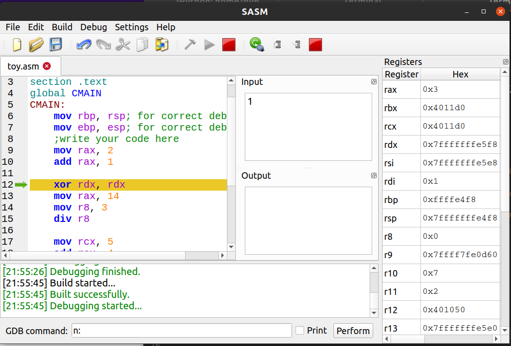
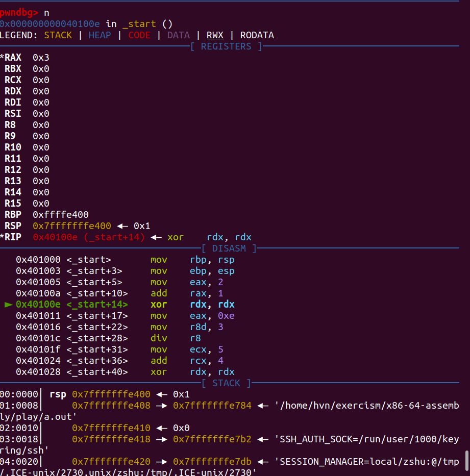

Bài trước viết Hello world dùng x64 assembly dù không phải quá khó, nhưng cũng dài 16 dòng, hơn cả Java, lại còn toàn magic value aex, ebx, ... nếu bảo không nhìn tài liệu, cũng khó lòng mà tự viết được từ 1 file trắng.
Chuyện này nghĩa là, để print cũng khó khăn, mà print khó, thì học lập trình kiểu gì? làm sao biết 1+1 ra kết quả bao nhiêu?
Debugger là câu trả lời! Debugger giúp không cần print, mà vẫn biết giá trị là bao nhiêu.
Bài này giới thiệu 2 debugger: 1 đủ phức tạp, và 1 rất đơn giản.
SASM - Simple crossplatform IDE for NASM, MASM, GAS, FASM assembly languages
Một IDE đơn giản, cài trên Ubuntu 20.04 chỉ với:
sudo apt-get install sasm
sau đó bật lên vào menu Settings > settings chọn "Mode" x64 để chạy code x64. menu "Debug", chọn "show registers" để thấy các giá trị.
Ví dụ thực hiện gán rax bằng 2 rồi cộng 1, thấy rax là 3
mov rax, 2 ; rax=2
add rax, 1 ; rax+=1
Bấm F5 để bắt đầu debug, bấm F11 để tới câu lệnh tiếp theo.

PS: Windows có rất nhiều tool xịn như x64dbg hay windbg.
GDB - pwndbg
Như đã giới thiệu trong Học Rust với gdb, gdb là debugger phổ biến bậc nhất trên môi trường Unix/Linux. Cài thêm extension vào để có màu mè , ở đây chọn pwndbg:
git clone https://github.com/pwndbg/pwndbg
cd pwndbg
./setup.sh
global _start
section .text
_start:
mov rbp, rsp; for correct debugging
mov ebp, esp; for correct debugging
;write your code here
mov rax, 2
add rax, 1
xor rdx, rdx
mov rax, 14
mov r8, 3
div r8
mov rcx, 5
add rcx, 4
xor rdx, rdx
mul rcx
sub rcx, 7
xor eax, eax
ret
build file asm rồi chạy:
$ sudo apt install -y nasm
$ nasm -felf64 test.asm
$ ld test.o
$ gdb ./a.out

Kết luận
Không print được thì dùng debugger. Dùng debugger thì không còn phải print nữa.
Happy debugging!
Hết.
HVN at http://pymi.vn and https://www.familug.org.